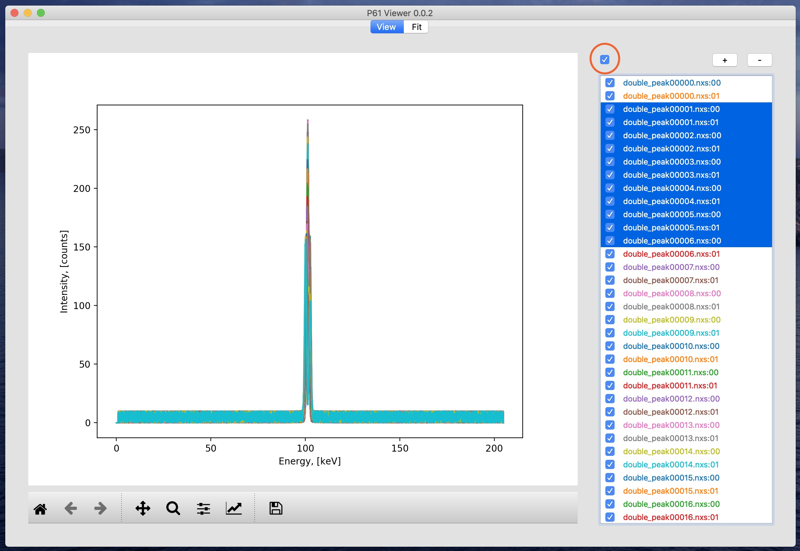
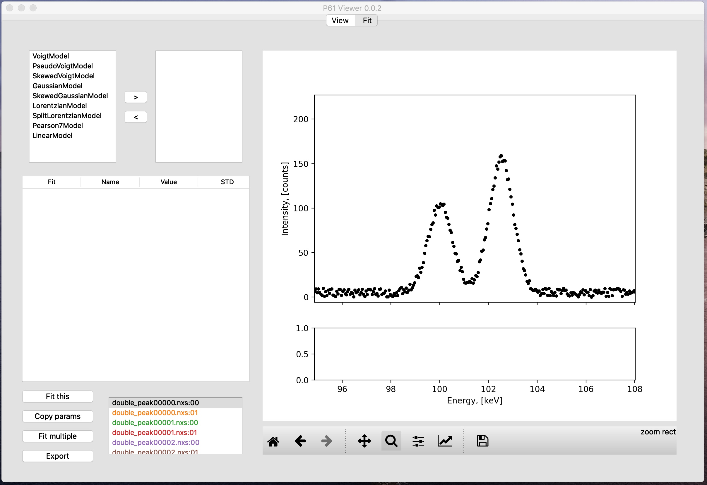
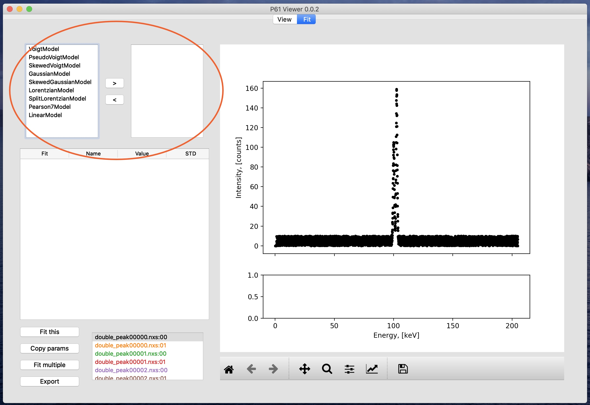
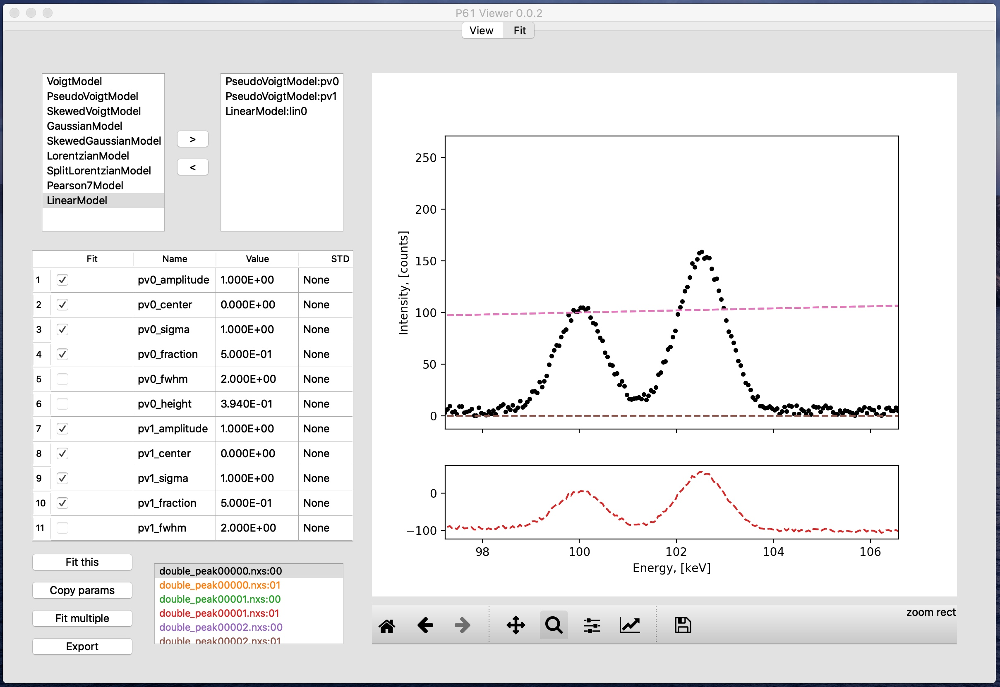
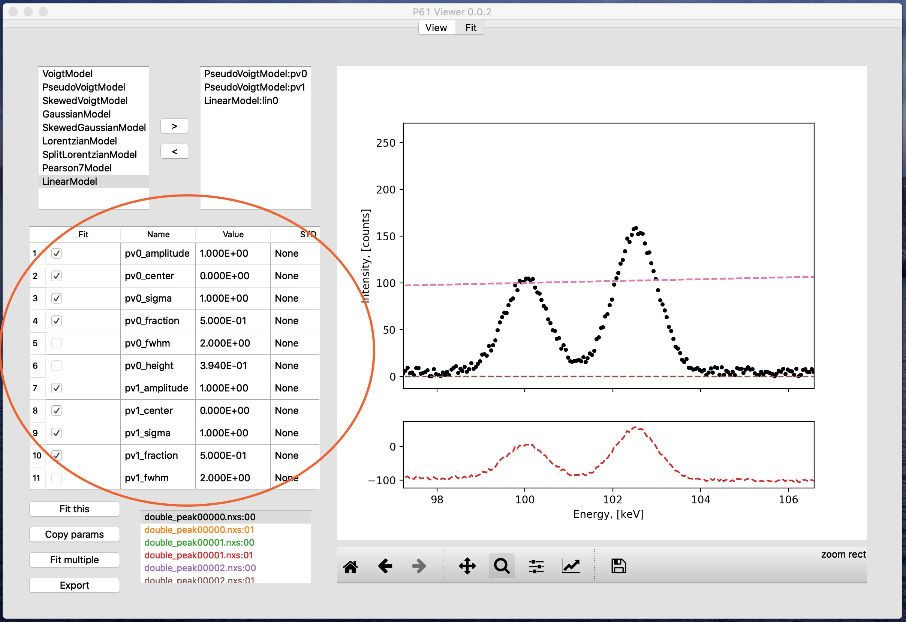
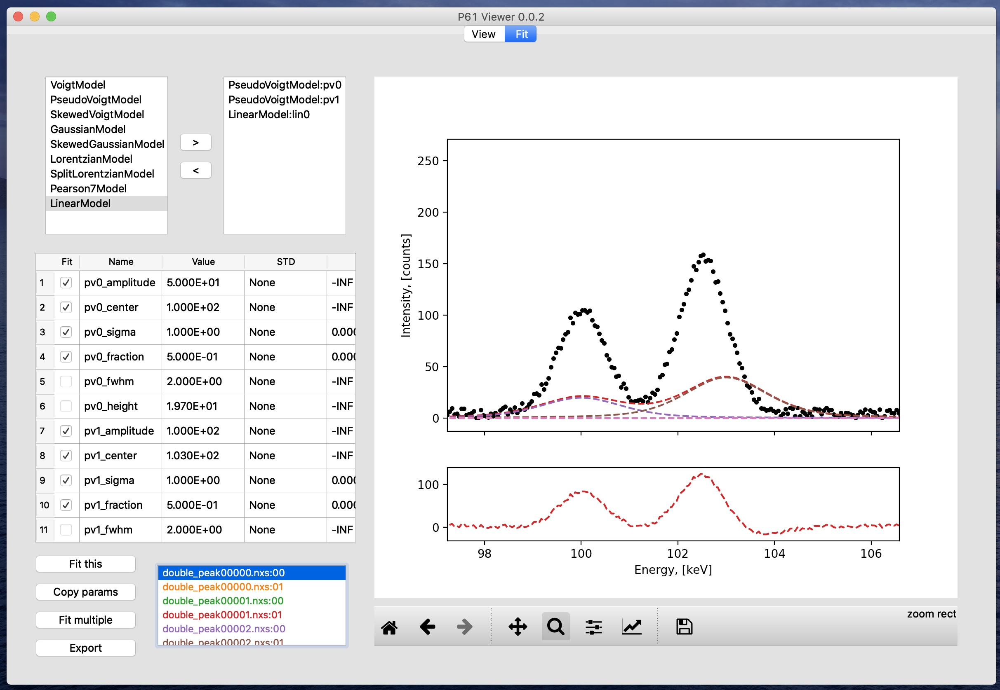
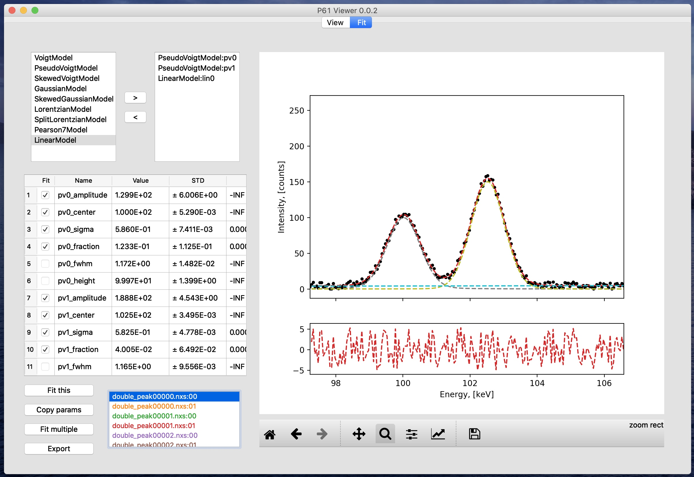
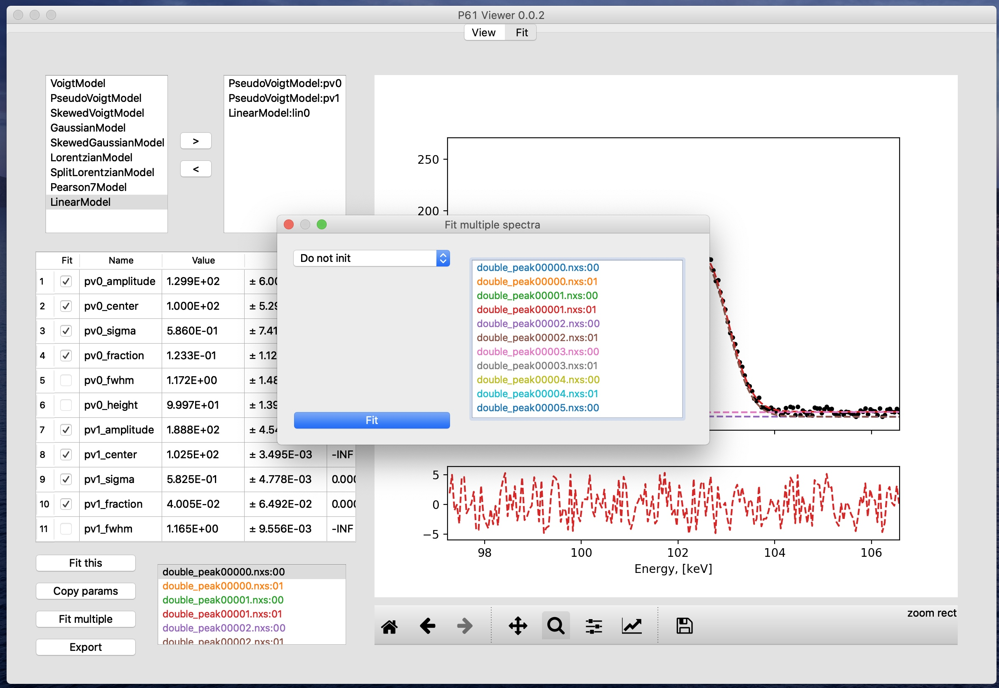
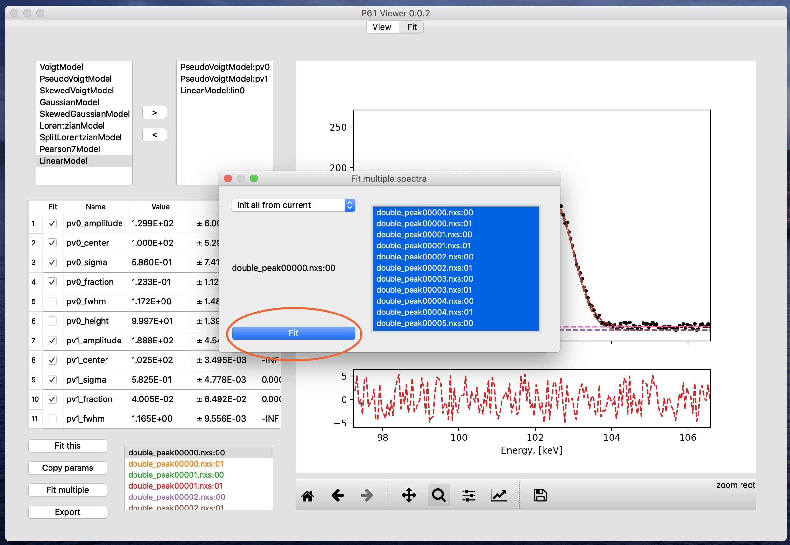

User guide (updated for version 0.0.2)¶
Test files¶
You can get the test files if you download the archive with the source code from the
release page.
The files are in the P61Viewer/test_files/generated folder.
Open and view .nxs spectra¶
In P61 Viewer you can view and compare multiple .nxs files at once. To do that click the “+” button:
Once the files are open, you can show or hide their data from the plot by clicking the checkboxes next to their names. To change visibility of multiple files at once, select them on the list and click the checkbox above.
To close the files, select them on the list and click the “-” button.
Note, that each .nxs file contains two datasets coming from channels (detectors) 0 and 1.
Also note, that if you try to open a dataset that is already open, the program will do nothing.
Plot controls¶
Plot controls are standard for matplotlib library. To autoscale, move, or magnify the plot you have to first click the appropriate buttons below:
Sequential fit with an arbitrary model¶
Preparation¶
First make sure that all of the datasets you would like to fit have checked boxes next to them. Then you need to switch to the “Fit” tab by clicking it:
Now you need to select the fit area by scaling the plot, since only data within the plot x range will be taken for the fit. In this case we want to focus on the two peaks in the middle of the spectrum.
Model builder¶
Now let us have a look at the interface. First we have the fit model builder:
On the left side of the model builder you have the list of all available models, and on the right the models, sum of which will be used for the fit. To add a model to the list on the right, select it in the left list and click the right-pointing arrow button. To remove a model from the list on the right, select it in the right list and click the left-pointing arrow button.
For this dataset we are going to use two pseudo-Voigt functions and a linear function. After adding them to the model the result should look like this:
Note that on the right list all models have a shortened unique name after a colon: PseudoVoigtModel:pv0,
PseudoVoigtModel:pv1, LinearModel:lin0. This short name is used as a prefix in model parameter names,
so that all parameter names in the fit are unique.
For instance, parameter name pv0_amplitude is the amplitude of the pseudo-Voigt model pv0.
A description of all models, their parameters and their meaning can be found
here.
Model inspector¶
Now that we have defined our model, let us look at the model inspector:
It shows the parameter values, errors and limits specific to the selected dataset. The first column, “Fit”, marks if
the parameter will be varied during the next optimization. Columns “Name”, “Value”, and “STD” are self-explanatory,
amd the columns “Min” and “Max” (scroll the table right to see them) show the limits within which the parameters will
be varied. Columns “Value”, “Min”, and “Max” are editable by double-clicking the cells and accept floating point
numbes in any format, including INF and -INF for the limits.
The next step is to edit the parameter values until you have a reasonable starting point for the fit. If you like, you can edit the limits too. The result may look like this:
And now you are ready for the first fit. Click “Fit this” button, and if everything goes right, the result will look like this:
Batch fit¶
Now that the first file is fitted sufficiently well, we can proceed to fitting in batches. Right now only one dataset is fitted. If select any other dataset on the list at the bottom, you will see that for them the fit parameters still have the initial values.
To set up the batch fit, select the first dataset again, where we have the parameters estimated, and click the “Fit multiple” button. You will see a menu like this:
The drop-down list on the right has options “Do not init”, “Init all from current”, and “Sequential from current”. If you select the first one, then for each dataset the fit will start with its current parameters. This might be a good option for later. The second option “Init all from current” will copy the parameters of the currently selected dataset to each one in the sequence before its fit. The third option “Sequential from current” will use the results of each dataset’s fit as a starting point for the next dataset.
For the datasets shown here, the second option “Init all from current” is the best one, since in the middle of the dataset list, where the peaks completely overlap, the results become unstable, and the “Sequential from current” option would carry this instability to the end, where the peaks are clearly separated again. So with “Init all from current” option selected select all the files (or as many as you want to have fitted) on the list, and click the “Fit” button:
After this, depending on whether you set the parameter limits and how, the results should look reasonably good for all datasets except ones where the peaks overlap completely. It is possible to get to good results there as well with the tools presented in this guide, but for now we will move on to the last topic.
Export¶
After you are satisfied with the results you have, you can export them to a .csv file readable by Excel, Origin,
and other programs. Just click the “Export” button at the bottom, choose a file name, and it is done.
And this concludes the user guide.